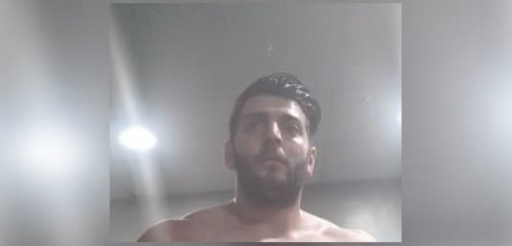
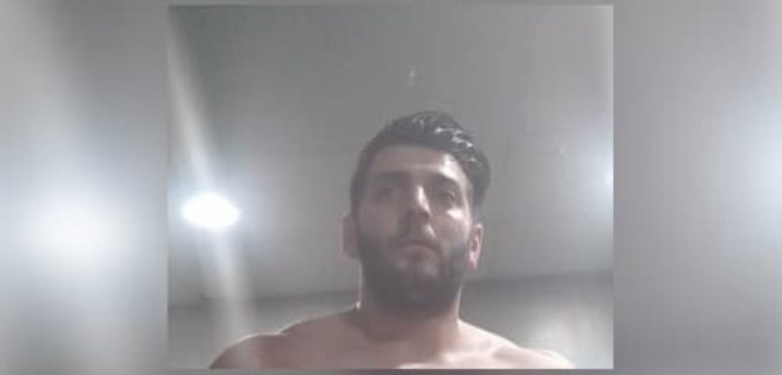

Eastcoastcartelkings Admits Selling Counterfeit Oxy Pills
~3 min read | Published on 2021-08-12, tagged Counterfeits, Drug-Bust, Drugs, Pleaded-Guilty using 675 words.
A man living in Connecticut pleaded guilty to his role in the manufacture and distribution of counterfeit oxycodone pills through the darkweb.
Arber Isaku, 31, a resident of Stamford, Connecticut, admitted participating in the production of counterfeit oxycodone pills and the distribution of those pills through darkweb markets. According to court documents, Isaku operated vendor accounts on Hansa and Dream Market under the username “eastcoastcartelkings.”

Statements made in court revealed that Isaku and his accomplice Vincent Decaro operated from Decaro’s residence from where they pressed fentanyl analogues into oxycodone pills. They then distributed the pills to users throughout the US through the darkweb. They reportedly received help in the production of the pills and mailing of drug packages from another co-conspirator named David Reichard who lived at Decaro’s residence for a short time.

Isaku and Decaro Were first arrested in Las Vegas in June 2017. Isaku was allegedly found in the possession of an undisclosed number of 30-milligram pills. Isaku was arrested for a second time on April 3, 2017, after authorities made a controlled delivery of a drug package addressed to him. The package contained approximately 160 grams of fentanyl. The arrest resulted in the search of Isaku’s residence. The search resulted in the seizure of 200 30-milligrams pills and Isaku’s laptop.

A search of the laptop led to the discovery of several PGP keys. Two of the keys were named “ecckhansa” and “ECCKings”. Authorities also acquired records from Coinbase that showed that Isaku had an account on the exchange.
From the criminal complaint:
Records from Coinbase, a digital currency exchange headquartered in San Francisco, California, showed that Isaku owns a Coinbase account in which multiple wallets are organized under the name “Arbyscoins.” One of those wallets was created on or about July 5, 2017, and had the address of 12hsYQJ6QKw1U66pS65GsqVzmsikdtKa3m- the same wallet address used as the refund wallet for the “eastcoastcartelkings” Hansa account. The Isaku Coinbase account documents also showed a transfer of .05079822 Bitcoins to the 12Bogh3xUUCQ6TMKQvNKsNGnE4pEX38hgG wallet- the wallet used for the “eastcoastcartelkings” Hansa vendor bond
After international law enforcement seized the Hansa Market servers, investigators combed through the data on the servers, identifying vendors across the globe. Evidence discovered on the server led to the discovery that Isaku had transferred Bitcoin to and from the market.

Investigators executed a search warrant on Decaro’s residence on April 3, 2018. The search resulted in the seizure of a large number of pills that contained a total of approximately 330 grams of fentanyl and acetyl fentanyl, approximately 40 grams of powdered fentanyl analogues. Investigators also seized three pill presses, instructions on how to prepare carfentanil, a Hazmat suit, a gas mask, and a large number of U.S. Postal mail envelopes.
One of the USPS envelopes came from a known darkweb vendor in Florida, according to the complaint:
[Also located were] one kilogram of alprazolam powder; a USPS parcel sent from a known dark web fentanyl vendor in Ft. Meyer, Florida…
The search resulted in Reichard’s arrest. Isaku and Decaro were overseas at the time of the search.
Isaku and Decaro were arrested on September 21, 2018, by the Albanian State Police as they attempted to cross the border from Albania to Kosovo. Officers then executed a search warrant at an apartment that the duo had been staying in. The search led to the seizure of kilograms of alprazolam and fentanyl. Investigators also seized documents with instructions on how to produce fentanyl as well as tools used in the production of Xanax pills.
Isaku and Decaro were charged with one count of conspiracy to distribute and to possess with intent to distribute fentanyl analogue and two counts of possession with intent to distribute fentanyl analogue.
Isaku pleaded guilty to one count of possession with intent to distribute at least 100 grams of fentanyl analogues on August 6, 2021. He will be sentenced on October 29, 2021.
Isaku’s co-defendants, Decaro and Reichard already pleaded guilty and are awaiting sentencing.
complaint (pdf)
Arber Isaku, 31, a resident of Stamford, Connecticut, admitted participating in the production of counterfeit oxycodone pills and the distribution of those pills through darkweb markets. According to court documents, Isaku operated vendor accounts on Hansa and Dream Market under the username “eastcoastcartelkings.”

Arber Isaku in a picture uploaded to Flickr
Statements made in court revealed that Isaku and his accomplice Vincent Decaro operated from Decaro’s residence from where they pressed fentanyl analogues into oxycodone pills. They then distributed the pills to users throughout the US through the darkweb. They reportedly received help in the production of the pills and mailing of drug packages from another co-conspirator named David Reichard who lived at Decaro’s residence for a short time.
Vincent Decaro in a booking photo
Isaku and Decaro Were first arrested in Las Vegas in June 2017. Isaku was allegedly found in the possession of an undisclosed number of 30-milligram pills. Isaku was arrested for a second time on April 3, 2017, after authorities made a controlled delivery of a drug package addressed to him. The package contained approximately 160 grams of fentanyl. The arrest resulted in the search of Isaku’s residence. The search resulted in the seizure of 200 30-milligrams pills and Isaku’s laptop.
Items seized at Isaku's apartment in Albania | shqiptarja.com
A search of the laptop led to the discovery of several PGP keys. Two of the keys were named “ecckhansa” and “ECCKings”. Authorities also acquired records from Coinbase that showed that Isaku had an account on the exchange.
From the criminal complaint:
Records from Coinbase, a digital currency exchange headquartered in San Francisco, California, showed that Isaku owns a Coinbase account in which multiple wallets are organized under the name “Arbyscoins.” One of those wallets was created on or about July 5, 2017, and had the address of 12hsYQJ6QKw1U66pS65GsqVzmsikdtKa3m- the same wallet address used as the refund wallet for the “eastcoastcartelkings” Hansa account. The Isaku Coinbase account documents also showed a transfer of .05079822 Bitcoins to the 12Bogh3xUUCQ6TMKQvNKsNGnE4pEX38hgG wallet- the wallet used for the “eastcoastcartelkings” Hansa vendor bond
After international law enforcement seized the Hansa Market servers, investigators combed through the data on the servers, identifying vendors across the globe. Evidence discovered on the server led to the discovery that Isaku had transferred Bitcoin to and from the market.
More items seized at Isaku's apartment in Albania | shqiptarja.com
Investigators executed a search warrant on Decaro’s residence on April 3, 2018. The search resulted in the seizure of a large number of pills that contained a total of approximately 330 grams of fentanyl and acetyl fentanyl, approximately 40 grams of powdered fentanyl analogues. Investigators also seized three pill presses, instructions on how to prepare carfentanil, a Hazmat suit, a gas mask, and a large number of U.S. Postal mail envelopes.
One of the USPS envelopes came from a known darkweb vendor in Florida, according to the complaint:
[Also located were] one kilogram of alprazolam powder; a USPS parcel sent from a known dark web fentanyl vendor in Ft. Meyer, Florida…
The search resulted in Reichard’s arrest. Isaku and Decaro were overseas at the time of the search.
Isaku and Decaro were arrested on September 21, 2018, by the Albanian State Police as they attempted to cross the border from Albania to Kosovo. Officers then executed a search warrant at an apartment that the duo had been staying in. The search led to the seizure of kilograms of alprazolam and fentanyl. Investigators also seized documents with instructions on how to produce fentanyl as well as tools used in the production of Xanax pills.
Isaku and Decaro were charged with one count of conspiracy to distribute and to possess with intent to distribute fentanyl analogue and two counts of possession with intent to distribute fentanyl analogue.
Isaku pleaded guilty to one count of possession with intent to distribute at least 100 grams of fentanyl analogues on August 6, 2021. He will be sentenced on October 29, 2021.
Isaku’s co-defendants, Decaro and Reichard already pleaded guilty and are awaiting sentencing.
complaint (pdf)